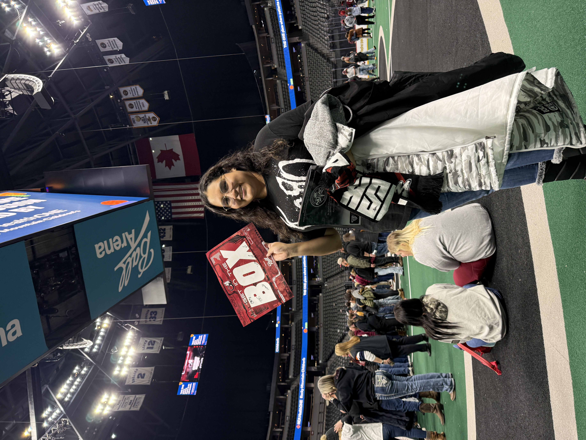
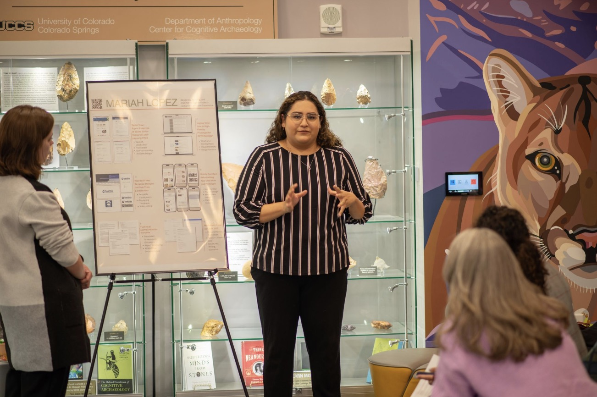

Project Coordinator
Addison Group / The Resource Exchange (Contract)
Conducted member monitoring to support services and wellness goals within SharePoint, claims and billings, and case management.
ABOUT

I am a Digital Product Specialist focused on UX/UI Engineering, Technical Writing, and Business Analysis. My work centers on transforming research, requirements, content, and data into user-friendly experiences, clear documentation, and actionable insights.
A timeline of roles across coordination, documentation, operations, and customer-facing work.
Addison Group / The Resource Exchange (Contract)
Conducted member monitoring to support services and wellness goals within SharePoint, claims and billings, and case management.
Mortgage Solutions Financial
Reviewed mortgage documentation for accuracy, compliance, and quality assurance, including SQL reporting for report tracking.
Allegion / SMX Management (Contract)
Processed purchase orders within Oracle and CRM systems and used Adobe Acrobat Pro and enterprise workflows to keep documentation moving.
First Source Advantage LLC
Created CRM documentation, managed banking information, and supported customer financial and accounting services.
Vitalant
Organized donor scheduling, maintained documentation compliance accuracy, and supported promotional outreach.
Pilot Flying J
Supervised teams, onboarding, delegation, customer service, and coordination across sales, fuel, and cash reporting.
Walmart
Coordinated backroom operations, stocking, modular layouts, pricing, and high-ticket inventory management.
Lamar Estates
Supported residents through quality-of-life activities, vital signs, charting, and HIPAA-aware healthcare workflows.
Current and completed study focused on digital product systems, communication, and analytics.
University of Denver
Web Design & Development, Database Administration, and Business Analytics.
University of Colorado Colorado Springs
Business Administration track, Magna Cum Laude, and National Society of Leadership and Success.
A quick snapshot of the tools and strengths that support product, content, and operational work.
Strategy, research, and interface design
Requirements, reporting, and process improvement
Clear communication for technical and regulated work
Daily systems used across product and operations work
A glimpse outside of work.


